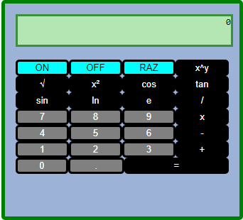
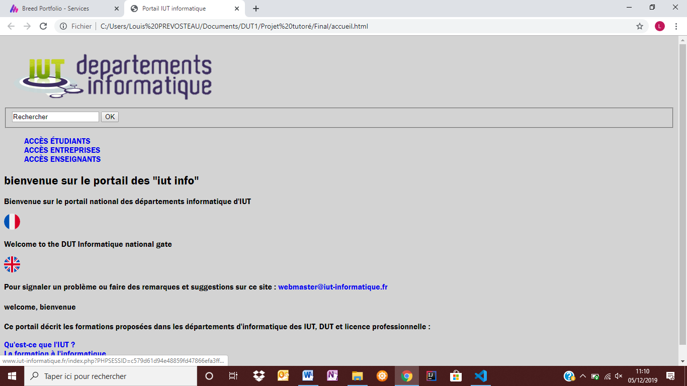

Réalisation d'une calculatrice en language HTML, CSS e JavaScript. Projet réalisé dans le cadre de la spécialité Informatique et Sciences de Numérique, en classe de Terminal Scientifique.
En savoir plus
Refonte du site web du Portail des IUT Informatique en HTML et CSS, utilisation du Responsive Design. Projet réalisé au cours du semestre 1 dans le cadre du DUT Informatique.
En savoir plusRéalisation d'u jeu de type Bomberman à l'aide de Python Qt. Projet réalisé au cours du semestre 1 dans le cadre du DUT Informatique.